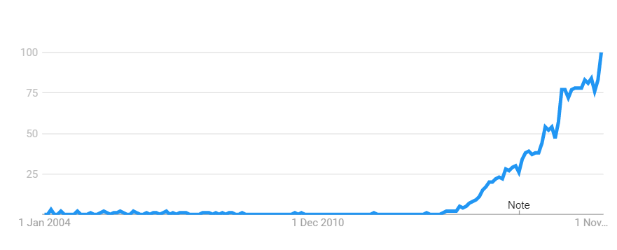

<easy>
Slay the Monolyth!
microservices simple and easy right?
</easy>goo.gl/Api8dX

Do You remember the times when You where a student?
I had one Dream

Source
A new project!
The Dream Comes true!
Project specs:
|

Microservices Hype
Source
It is starting to get messy

Source
But why?
| Java Case | Tablet Case | Microservices Case |
That is not enough!
Inspiration
Start with simple blocks

They do talk to each other

It gets complicated

Lets zoom in to the last Part
Connect to the logging service

Attach the IAM

Attach external systems and mock them
Devops!

Some Security Layers
Scaling
Multi-version support
It gets scarier... Imagine:
- Rolling updates on the Production
- Retries
- The customer wants Gitlab CI instead of Jenkins
- ...
Management Perspective...
- Distributed Teams VS One Product
- Scrum in every Team BUT we deliver on the same Day
- Every Team with different Project Owner BUT the same goal
- One Quality baseline
When the project beginns, there is nothing, no tooling, no nothing...
And that too...

The first Sprints all where like - lets do everything to rescue the Sprint!

Source
Complexity, and more Complexity
SourceTesler's Law, also known as The Law of Conservation of Complexity, states that for any system there is a certain amount
of complexity which cannot be reduced.
Source
Essential complexity
Essential complexity is caused by the problem to be solved, and nothing can remove it.
Source
Accidental complexity
Accidental complexity relates to problems which engineers create and can fix
Who is winning in this battle?
| Mono | Micro | |
|---|---|---|
| IAM, logging, external systems | Yes | Yes |
| Configuration | one place | dozen places |
| intercomponent dependencies | No | Tons! |
| scalability | what? | Yes! |
| production install | simple | tricky |
It a cost factor everytime!
| Mono | Micro | |
|---|---|---|
| IAM, logging, external systems | Yes | Yes |
| Configuration | one place | dozen places |
| intercomponent dependencies | No | Tons! |
| scalability | what? | Yes! |
| production install | simple | tricky |
Source
What are we winning with microservices then?
- Separations of concerns
- Scalability
- Speed - in some way...
Does it have to be that hard?
The Microservices architecture has many appealing qualities, but the road towards it has painful traps for the unwary.
-Martin Fowler
Many articles state that high team experience is a must in a microservice project.
Source 1 Source 2 Source 3 Source 4
As the microservices approach is no silver bullet many articles place a concrete questions:
When do you need microservices?
That is a serious question!
And what when you already have a project, and team?
How to handle the complexity?
How to controll the quality?
People!
Source


Source
But - as You mentioned - the problem still sits in front of the computer?
Gamification - CI Game plugin
Source
Care About Your Craft
Why spend your life developing software unless you care about doing it well?
Pragmatic Software Development Tips
SIGN IT!
Microservices are special, so they require special care too.
Be carefull what You are hoping for
?
Questions
goo.gl/Api8dX